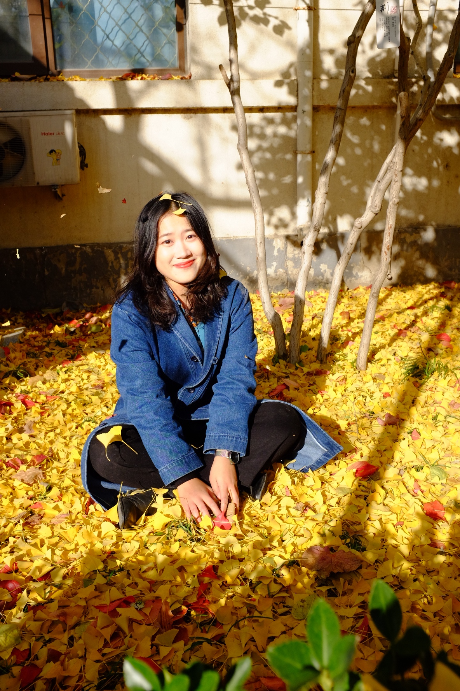

|  |
| Ph.D. Student |
| Chinese Society of Forestry Student Member |
College of Materials Science and Technology |
| Beijing Forestry University, Beijing, PR China |
|
Email: lijingyu AT bjfu.edu.cn |
| Links： Research Gate |
Jingyu Li is currently a 2nd-year Ph.D. student at College of Materials Science and Technology of Beijing Forestry University, under the supervision of Prof. Zhiming Yu and Assoc. Prof. Erni Ma. She was admitted by Beijing Forestry University in 2016 as a M.Eng. student, supervised by Assoc.Prof Erni Ma, and converted into a Ph.D. student in 2019, supervised by Zhiming Yu and Assoc.Prof Erni Ma. Before that, she earned his B.Eng. degree from Beijing Forestry University in 2016, where she worked with Assoc.Prof Erni Ma.
Time-domain NMR study on wood water relations
Study on physical-chemical environment model and dual nature of free bound water in wood cell wall
The impact of cellulose, hemicellulose and lignin on wood hygroscopicity and dimensional stability
Ph.D. in Wood Science and Technology, Beijing Forestry University, 2019-now (M.Eng. Leading to Ph.D.)
M.Eng. in Wood Science and Technology, Beijing Forestry University, 2016-2019
B.Eng. in Wood Science and Engineering, Beijing Forestry University, 2012-2016
Differences between hygroscopicity limit and cell wall saturation investigated by LF-NMR on Southern pine (Pinus spp.)
Jingyu Li, Erni Ma, Tiantian Yang.
Holzforschung, 73(10):911-921, 2019
Preparation of small particle diameter thermally expandable microspheres under atmospheric pressure for potential utilization in wood
Qirui Yi, Jingyu Li, Runhua Zhang, Erni Ma, Ru Liu.
J. Appl. Polym. Sci., 2021, 138(4), 49734, 2021
Synergistic effect of montmorillonite-lignin on improvement of water resistance and dimensional stability of (Populus cathayana)
Min Liu, Qirui Yi, Jingyu Li, Erni Ma, Ru Liu.
Ind. Crops. Prod., 141:111147, 2019
modification of （Populus cathayana） by alkali lignin combined with heat treatment
Haizhen Zhou, Jingyu Li, Erni Ma.
Polymers,10(11), 1240 2018
Static and dynamic sorption of lignin removed （Populus euramericana）
Haizhen Zhou, Jingyu Li, Erni Ma.
Tappi J., 17(2):71-77, 2018
Study on physical-chemical environment model and dual nature of free bound water in wood cell wall
NSF of China, Jan 2020-Dec 2024
Third Prize of Beijing Postgraduate English Speech Contest, Dec 2019
Academic Innovation Award, Beijing Forestry University, Oct 2019
Academic Scholarship for Postgraduates, Beijing Forestry University, Oct 2016-Oct 2020 (continuously)
Outstanding Undergraduate Thesis Award, Beijing Forestry University, Jun 2016 (<3%)
Teaching assistant at Beijing Forestry University for:
Undergraduate course English for wood science and engineering 2019-2021
3 Bachelor Thesis 2019-2021
1 National Undergraduate Innovation and Entrepreneurship Training Programs 2019
Interests Photography and Linguistics
Computer skills Excel, Word, Origin, basic Matlab, R studio, Photoshop, Lightroom, AutoCAD
English proficiency IELTS(2018) 7.5 (Listening 8.5 Reading 8.5 Writing 6.0 Speaking 6.0)
Certification CATTI(China Accreditation Test for Translators and Interpreters) Associate translator in English
{kind=link}
{kind=link}